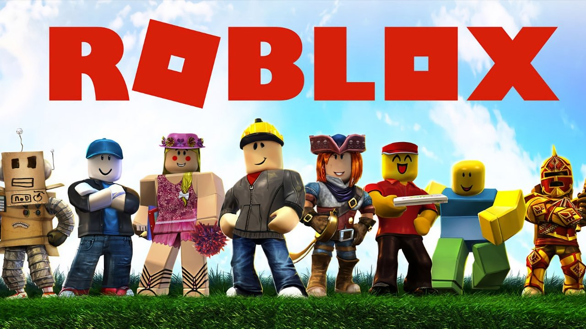
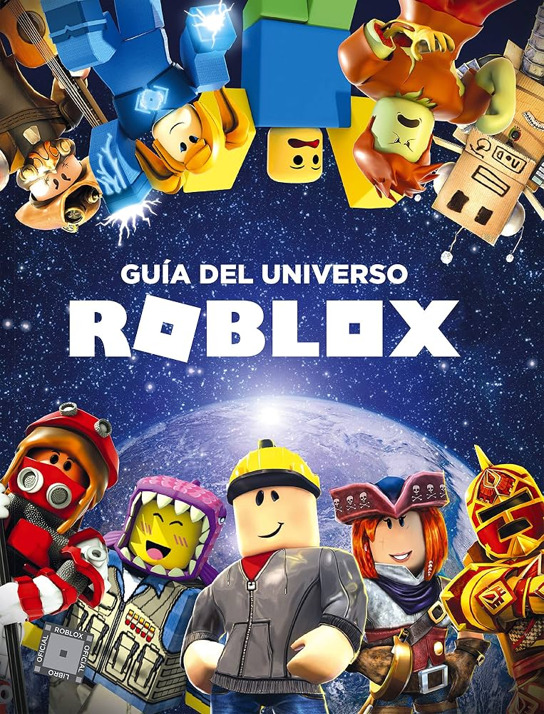
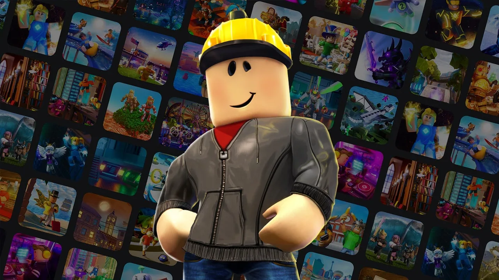
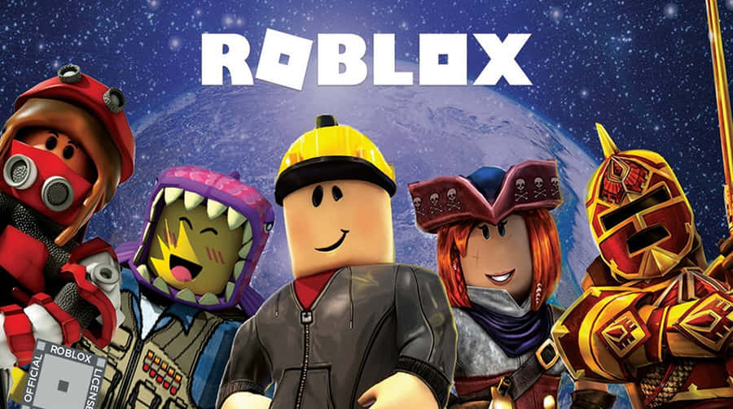

Año de lanzamiento: 2006 Género: Plataforma de creación de videojuegos / Multijugador masivo
Roblox es una plataforma que permite jugar millones de juegos creados por otros usuarios, además de crear tus propias experiencias usando su motor y el lenguaje de programación Lua. No es un solo videojuego, sino un universo de juegos dentro de una misma plataforma.
El objetivo depende de cada juego: puedes construir una casa, sobrevivir a un tsunami, escapar de un asesino, administrar un restaurante o simplemente socializar con amigos en un mundo virtual.
Me gusta porque siempre hay algo nuevo que jugar, es gratuito, se puede jugar con amigos y lo que lo hace diferente de otros videojuegos es que los propios jugadores crean el contenido.
| Personaje | Rol | Descripción |
|---|---|---|
| Noob | Jugador principiante | Avatar por defecto que representa a los nuevos jugadores |
| Builderman | Personaje icónico | Uno de los primeros avatares oficiales de Roblox |
| Guest | Invitado | Jugador sin cuenta registrada |


